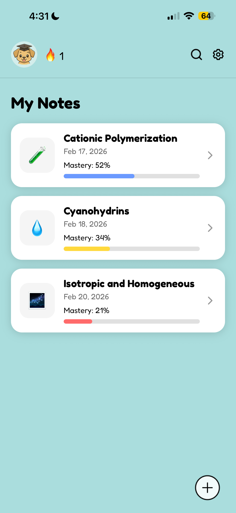

Predict My Results
See what grade you're trending toward based on performance.
Upload your lecture notes. StudyPup instantly generates questions, predicts your exam performance, and helps you fix weak spots before test day.
Download on the App StoreFree to download • Built for serious students

Snap a picture or paste lecture notes.
AI generates targeted questions based on your material.
See where you're struggling and generate focused revision instantly.
See what grade you're trending toward based on performance.
Automatically generate new questions based on mistakes.
Chat back and forth with your material like a tutor.
Turn notes into an audio explanation.
Passive reading doesn't prepare you for exams. Active recall does. StudyPup forces your brain to retrieve information — the fastest way to improve retention.
Download StudyPup